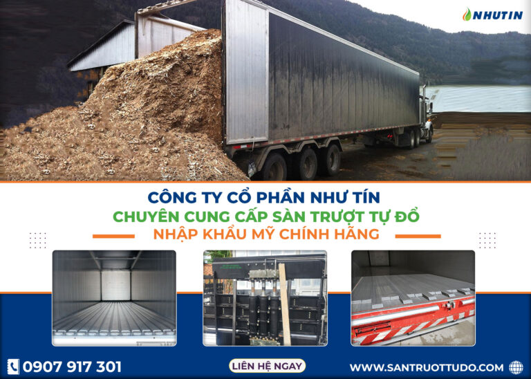

Bã vỏ hạt điều
Nhiên liệu sinh khối giá rẻ, nhiệt lượng cao lên đến 5000 Kcal/kg. Tiết kiệm chi phí sản xuất lên tới 50% so với đốt than đá.

Bã điều là gì?
Bã điều (bã vỏ hạt điều) là bã thu được sau khi đem vỏ hạt điều ép lấy dầu điều. Phần bã điều này được sử dụng làm chất đốt lò hơi giá rẻ mà nhiệt lượng cao lên đến 5000 Kcal/kg.
Sơ bộ về Hạt Điều – Vỏ Điều và Dầu Vỏ Điều
Các vùng trồng cây điều ở Việt Nam bao gồm chủ yếu ở miền Nam (tỉnh Bình Phước, Đồng Nai) và ít hơn ở miền Trung (tỉnh Bình Định, Phú Yên). Sản lượng hạt điều thô thu được trong nước từ tổng diện tích vùng nguyên liệu 305 ha là 370 ngàn tấn (2022).
Bên cạnh một lượng khiêm tốn hạt điều trong nước, Việt Nam nhập một lượng khá lớn hạt điều thô theo dạng tạm nhập tái xuất với số lượng hơn 3 triệu tấn (theo thống kê hải quan 2022). Sau khi qua khâu chế biến tách vỏ hạt điều cứng và có thể cả lụa, nhân hạt điều được xuất khẩu trở lại.
Việt Nam là nước xuất khẩu nhân điều lớn nhất trên thế giới, với sản lượng khoảng 600.000 tấn/năm, chiếm 80% sản lượng nhân điều thế giới (2022).
Các thị trường xuất khẩu chính: Mỹ, Trung Quốc (90% thị phần), Đức (60% thị phần), Hà Lan (80% thị phần).
Vỏ hạt điều
Vỏ hạt điều là lớp vỏ bọc bên ngoài của hạt điều, có màu nâu đen và rất cứng. Vỏ hạt điều rất khó bóc, đòi hỏi kỹ thuật và máy móc để tách hạt và vỏ ra khỏi nhau. Sau khi tách hạt và vỏ, vỏ hạt điều chủ yếu được dùng làm nguyên liệu chế biến dầu vỏ hạt điều.
Dầu vỏ hạt điều CNSL
Dầu vỏ hạt điều CNSL (Cashew Nut Shell Liquid) được sử dụng trong nhiều ứng dụng:
- Công nghiệp chế biến gỗ: Chất lỏng chống ẩm, bảo vệ gỗ khỏi côn trùng
- Sơn và mực in: Tăng độ bóng và độ bền bề mặt
- Chất độn: Sử dụng trong sản xuất nhựa và cao su
- Chất tẩy: Trong sản phẩm chăm sóc da và tóc
- Thuốc trừ sâu: Sử dụng như một chất độc trong thuốc trừ sâu và thuốc trừ cỏ
Thông số kỹ thuật của Bã Vỏ Điều chất lượng
Phụ phẩm từ nhà máy chế biến dầu vỏ hạt điều chủ yếu là bã điều (tức vỏ hạt điều sau khi tách nhân hạt và xử lý vỏ để trích dầu vỏ điều), được dùng làm chất đốt sinh khối, hay xăng sinh học. Đây là nguồn nguyên liệu sạch, là xu hướng tất yếu để thay thế nhiên liệu hóa thạch đang dần cạn kiệt.
Thông số chất lượng
Bã điều có thể dùng rộng rãi để tạo năng lượng cho hầu hết các nhà máy sản xuất công nghiệp. Đôi khi, bã vỏ hạt điều cũng được sử dụng để sản xuất phân bón hữu cơ.
Độ ẩm: Từ 10% - 14% (kiểm soát chặt chẽ)
Độ tro: Thường dưới 3% (ảnh hưởng khả năng đốt)
Độ sạch: Không lẫn tạp chất, bụi bẩn
Nhiệt lượng: Có thể đạt đến 5000 Kcal/kg
Bảng quy cách sản phẩm
| Thành phần | 100% vỏ điều sau ép dầu |
| Tạp chất | < 3% |
| Độ ẩm (ARB) | 12% +/- 2% (m/m) |
| Nhiệt lượng (ARB) | 4.400 +/- 200 kcal/kg |
| Sản lượng cung ứng | 50 – 20.000 tấn/tháng |
| Quy cách | Dạng bã điều rời (đổ xá) |
Ưu điểm của Bã Điều dùng làm chất đốt sinh khối
Ưu điểm nổi bật
-
Giá thành thấp:
Bã điều là sản phẩm phụ của quá trình sản xuất hạt điều, có giá thành thấp hơn so với các loại nhiên liệu khác, cắt giảm chi phí sản xuất hết sức hiệu quả. -
Nhiệt lượng cao:
Bã điều mang lại nhiệt lượng cao (4.400-5.000 kcal/kg), đảm bảo hiệu suất đốt tốt cho lò hơi công nghiệp. -
Nguồn cung dồi dào:
Nguồn cung cấp bã điều dồi dào quanh năm từ các nhà máy chế biến hạt điều tại Việt Nam. -
Dễ pha trộn:
Dễ pha trộn bã vỏ hạt điều với các loại than đá hay các sinh khối khác như trấu, mùn cưa, dăm gỗ để đẩy nhanh nhiệt của lò hơi, tăng hiệu quả và giảm chi phí vận hành. -
Thân thiện môi trường:
Bã điều là nhiên liệu sinh khối nên thân thiện với môi trường hơn so với các loại nhiên liệu hóa thạch, giúp nhà máy được đánh giá cao về yếu tố sản xuất bền vững.

Công dụng khác của Bã Điều
-
Nhiên liệu sinh học:
Bã điều có thể được sử dụng để sản xuất nhiên liệu sinh học như bioethanol, giúp giảm thiểu sử dụng năng lượng từ nguồn hóa thạch. -
Sản xuất phân bón hữu cơ:
Bã điều có thể được sử dụng như một nguyên liệu để sản xuất phân bón hữu cơ tự nhiên, giúp cải thiện chất lượng đất và tăng năng suất cây trồng. -
Chất điều chỉnh đất:
Bã điều có khả năng điều chỉnh pH của đất. -
Ứng dụng công nghiệp khác:
Nhiều ứng dụng khác trong ngành công nghiệp.
Bảng giá của vỏ bã điều là bao nhiêu?
Giá bã điều thường khác nhau tùy vào từng khu vực và đơn vị sản xuất cung cấp. Tuy nhiên, giá bã điều thường dao động từ 1.000đ tới 3.000 đồng/kg.
Các yếu tố ảnh hưởng đến giá bã điều
-
Địa điểm sản xuất:
Giá bã điều thường được tính theo giá của khu vực sản xuất. -
Chất lượng của bã điều:
Giá bã điều cao hơn cho bã điều có chất lượng tốt hơn, không ẩm, không tạp, hàng mới không đóng khối, không nát vụn. -
Số lượng mua:
Giá bã điều có thể được giảm nếu khách hàng mua số lượng lớn. -
Thời gian mua:
Giá bã điều thường dao động theo mùa, với một số thời điểm giá có thể cao hơn hoặc thấp hơn so với mức trung bình.
Công ty Như Tín Chuyên cung cấp Bã Điều
UY TÍN – KINH NGHIỆM – TẬN TÂM
- Giao hàng tận nơi – Xe xuống hàng tự động tận kho
- Chất lượng và số lượng ổn định quanh năm
- Giá cả cạnh tranh, giao hàng ổn định – Xuống hàng nhanh
- Cung cấp hóa đơn chứng từ bán hàng rõ ràng
- Chuyên cung cấp bã vỏ hạt điều sạch, không pha trộn làm nhiên liệu đốt lò hơi
- Linh hoạt theo yêu cầu, phục vụ nhiều ngành sản xuất công nghiệp
- Phân phối toàn khu vực miền Nam, nhanh chóng và chuyên nghiệp
Liên hệ ngay để tìm hiểu về Bã Vỏ Hạt Điều
Để biết rõ hơn về sản phẩm bã điều, liên hệ với chúng tôi ngay
Hotline 1
0907 917 301Hotline 2
0978 572 662CÔNG TY CỔ PHẦN NHƯ TÍN